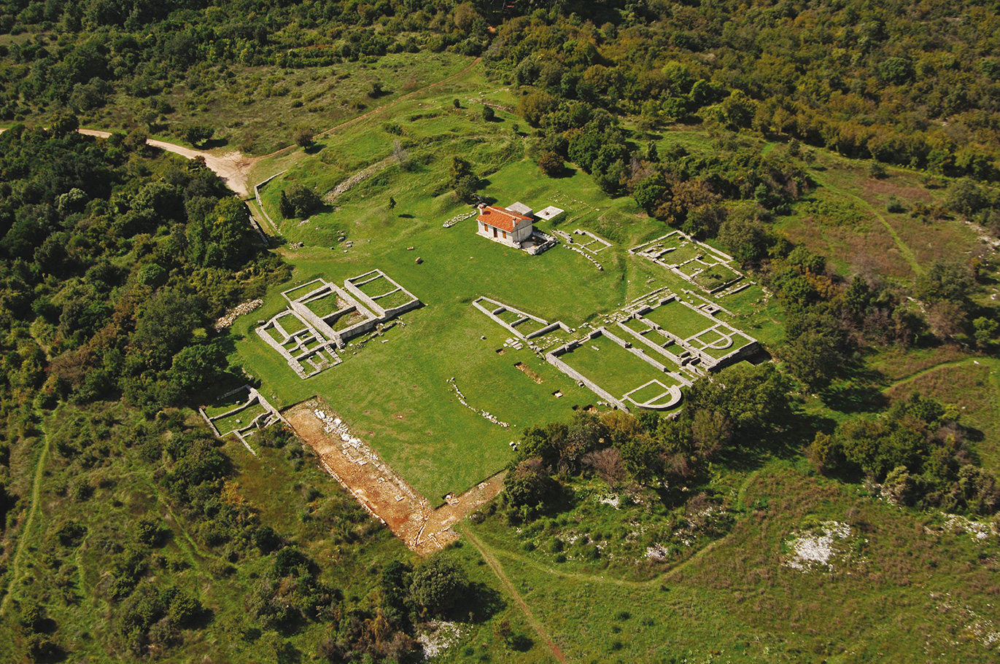
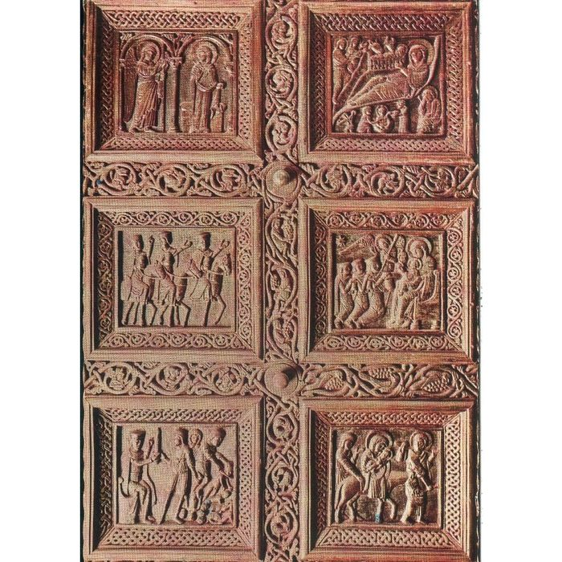
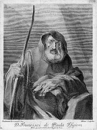

The culture of Croatia has roots in a long history: the Croatian people have been inhabiting the area for fourteen centuries, but there are important remnants of the earlier periods still preserved in the country. Because of its geographic position, Croatia represents a blend of four different cultural spheres. It has been a crossroad of influences of the western culture and the east—ever since division of the Western Roman Empire and the Byzantine Empire—as well as of the Mitteleuropa and the Mediterranean culture. The Illyrian movement was the most significant period of national cultural history, as the 19th-century period proved crucial in emancipation of the Croatian language and saw unprecedented developments in all fields of art and culture, giving rise to a number of historical figures. Most notably, Croatia has a place in the history of clothing as the origin of the cravat, a precursor of the modern necktie.
Ancient heritage
Ancient monuments from the Paleolithic era consist of simple stone and bone objects. Some of the earliest remaining historical features include 100,000-year-old bones of a Neandertal man near Krapina, Hrvatsko Zagorje. The most interesting Copper Age or Eneolithic finds are from Vučedol culture. Out of that culture sprung out Bronze Age Vinkovci culture (named after the city of Vinkovci) that is recognizable by bronze fibulas that were replacing objects like needles and buttons.
Bronze Age culture of Illyrians, ethnic group with distinct culture and art form started to organize itself in 7th century BC. Numerous monumental sculptures are preserved, as well as walls of citadel, Nezakcij near Pula, one of numerous Istrian cities from Iron Age. Greeks from Syracuse in Sicily in 390 BC came to the islands of Vis (Issa), Hvar (Pharos), and Korčula (Corcyra Nigra), and there have founded city-states in which they lived quite isolated. While the Greek colonies were flourishing on the island, on the continent the Illyrians were organizing their centers. Their art was greatly influenced by Greek art, and they have even copied some. Illyrians even conquered Greek colonies on Dalmatian islands. Famous was the queen Teuta of Issa (today island of Vis) which waged wars with the Romans. But finally, Rome subdued the Illyrians in the 1st century, cesar and after that the history of these parts is a history of Illyrian provinces of Rome and Byzantium.

Nezakcij
The Romans organized the entire coastal territory by transforming citadels to urban cities. There have been at least thirty cities in Istria, Liburnia and Dalmatia with Roman citizenship (civitas). The best-preserved networks of Roman streets (decumanus/cardo) are those in Epetion (Poreč) and Jader (Zadar). The best preserved Roman monuments are in Pola (Pula) including an Amphitheater (an arena) from the 2nd century.
In the 3rd century AD, the city of Salona was the largest (with 40,000 inhabitants) and most important city of Dalmatia. Near the city, emperor Diocletian, born in Salona, built Diocletian's Palace (around year 300 AD), which is the largest and most important monument of late antique architecture in the World. In the 4th century, Salona became the center of Christianity for entire western Balkans. It hade numerous basilicas and necropolises, and even two saints: Domnius (Duje) and Anastasius (Staš). One of few preserved basilicas in western Europe (beside ones in Ravenna) from the time of early Byzantium is Euphrasian Basilica in Poreč from the 6th century.
The early Middle Ages brought the great migration of the Slavs and this period was perhaps a Dark Age in the cultural sense until the successful formation of the Slavic states which coexisted with Italic cities that remained on the coast, each of them were modelled like Venice.
Sculpture
The altar enclosure and windows of early medieval churches were highly decorated with a transparent shallow string-like ornament that is called Croatian interlace because the strings were threaded and rethreaded through themselves. Sometimes the engravings in early Croatian script–Glagolitic appear. Soon, the Glagolitic writings were replaced with Latin ones on altar boundaries and architraves of old-Croatian churches.
In Croatian Romanesque sculpture, we have a transformation from decorative interlace relief (Croatian interlace) to figurative relief. The best examples of Romanesque sculpture are: the wooden doors of the Split cathedral made by Andrija Buvina (c. 1220) and the stone portal of the Trogir cathedral by the artisan Radovan (c. 1240). Zadar was an independent Venetian city. The most beautiful examples of Gothic humanism in Zadar are reliefs in gilded metal as in Arc of St. Simon by artisans from Milan in 1380. Most prominent modern sculptors include Ivan Meštrović, Antun Augustinčić, Frano Kršinić and others.

Split cathedral made by Andrija Buvina (c. 1220)
Painting
Gothic painting is less well-preserved, and the finest works are in Istria such as the fresco-cycle of Vincent from Kastav in the Church of Holy Mary in Škriljinah near Beram, from 1474. From that time are two of the best and most decorated illuminated liturgical books made by monks from Split, Hvals’ Zbornik (today in Zagreb) and the Missal of the Bosnian Duke Hrvoje Vukčić Hrvatinić (now in Istanbul).
The most prominent painter from Croatia was Federiko Benković who worked almost his entire life in Italy, while an Italian, Francesco Robba, did the best Baroque sculptures in Croatia.

Federiko Benković
In Austrian countries at the beginning of the 19th century the Romantic movement in Croatia was sentimental, gentle and subtle. Vlaho Bukovac brought the spirit of impressionism from Paris, and he strongly influenced the young artists (including the authors of "Golden Hall"). On the Millennium Exhibition in Budapest they were able to set aside all other artistic options in Austro-Hungary.
The turbulent 20th century re-oriented Croatia politically on many occasions and affected it in many other ways, but it could not significantly alter its already peculiar position at the crossroads of many different cultures.
Music
Music in Croatia has two major influences: Central European, present in the central and northern parts of the country including Slavonia, and Mediterranean, particularly present in the coastal regions of Dalmatia and Istria. In Croatia, both pop and rock are popular, and often incorporates Dalmatian or Slavonian folk elements. Since the mid-20th century, schlagers and chanson-inspired music have formed the backbone of the Croatian popular music.
Education
People in Croatia enjoy free government-sponsored education at the primary and secondary level, and partially free university education. There are over 800 primary schools and over 400 secondary schools in the country. The higher education is also government-sponsored, and mostly free for students who enroll with better results. There are thirty two various polytechnic schools, as well as seven universities in seven larger cities: Zagreb, Split, Rijeka, Osijek, Zadar, Dubrovnik, and Pula. Each of the universities in Croatia is composed of many independent "faculties" (Croatian fakultet, meaning college or department), which focus on specific areas of learning: Natural Sciences, Philosophy, Law, Engineering, Economy, Architecture, Medicine, and so on. There are also a number of other educational and scientific institutions, such as institutes (most notably the Ruđer Bošković Institute) or the Croatian Academy of Sciences and Arts, a learned society promoting language, culture, and science from its first conception in 1866. The Roman Catholic Church was instrumental in the founding of many educational facilities in Croatia. The Catholic Church in Croatia continues to maintain numerous seminaries and theological faculties in the country, as well as the Pontifical Croatian College of St. Jerome for Croatian students in Rome.
Architecture
The oldest preserved examples of architecture in Croatia are the 9th century churches, with the largest and the most representative among them being Donatus of Zadar and Church of Holy Trinity, Split. Some of the first churches build by the Croats were royal sanctuaries, and the influences of Roman art were the strongest in Dalmatia where urbanization was most dense, and there were the largest number of monuments. Along the coast, the architecture is Mediterranean with a strong influence of renaissance architecture in major urban areas best exemplified in works of Venetian Giorgio da Sebenico and Niccolò di Giovanni Fiorentino. Architecture in Croatia reflects influences of bordering nations. Austrian and Hungarian influence is visible in public spaces and buildings in the north and in the central regions. Large squares named after culture heroes, well-groomed parks, and pedestrian-only zones, are features of these orderly towns and cities, especially where large scale Baroque urban planning took place, for instance in Varaždin and Karlovac. Subsequent influence of the Art Nouveau was reflected in contemporary architecture.
Cuisine
Croatian cuisine is heterogeneous, and is therefore known as "the cuisine of regions". Its modern roots date back to proto-Slavic and ancient periods and the differences in the selection of foodstuffs and forms of cooking are most notable between those on the mainland and those in coastal regions. Mainland cuisine is more characterized by the earlier proto-Slavic and the more recent contacts with the more famous gastronomic orders of today, Hungarian, Viennese and Turkish, while the coastal region bears the influences of the Greek, Roman and Illyrian, as well as of the later Mediterranean cuisine, including Italian and French.
A large body of books bears witness to the high level of gastronomic culture in Croatia, which in European terms dealt with food in the distant past, such as the Gazophylacium by Belostenec, a Latin-Kajkavian dictionary dating from 1740 that preceded a similar French dictionary. There is also Beletristic literature by Marulić, Hektorović, Držić and other writers, down to the work written by Ivan Bierling in 1813 containing recipes for the preparation of 554 various dishes (translated from the German original), and which is considered to be the first Croatian cookbook.
Sports
Since independence Croatia has been a fairly successful sporting country. The most popular team sports have been association football (soccer). The Croatian Football Federation (Croatian: Hrvatski nogometni savez), with more than 118,000 registered players, is the largest sporting association in the country. Other popular sports are handball, basketball and to some extent water polo. The most popular sports played mainly by individuals are tennis, skiing, swimming, and to some extent table tennis and chess. The nation's arenas are primarily used for handball and basketball games.